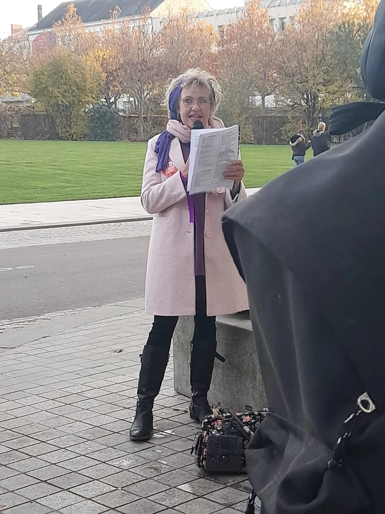
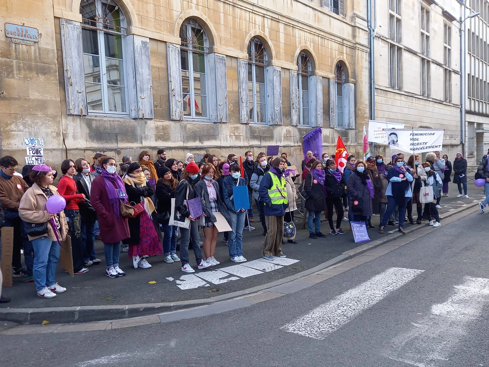
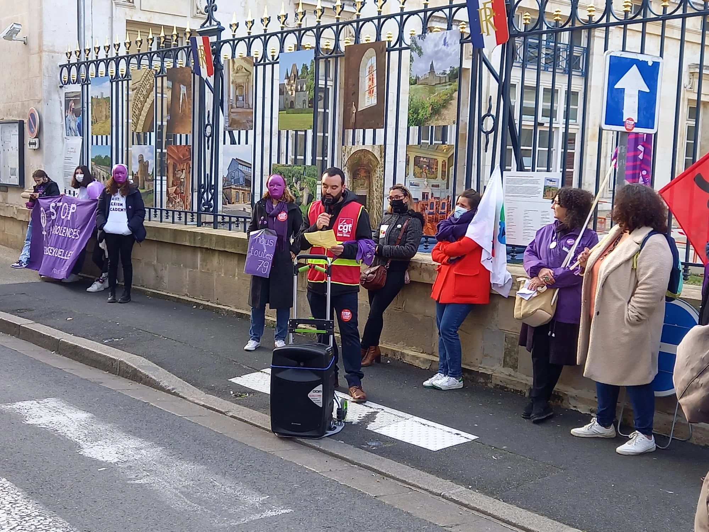
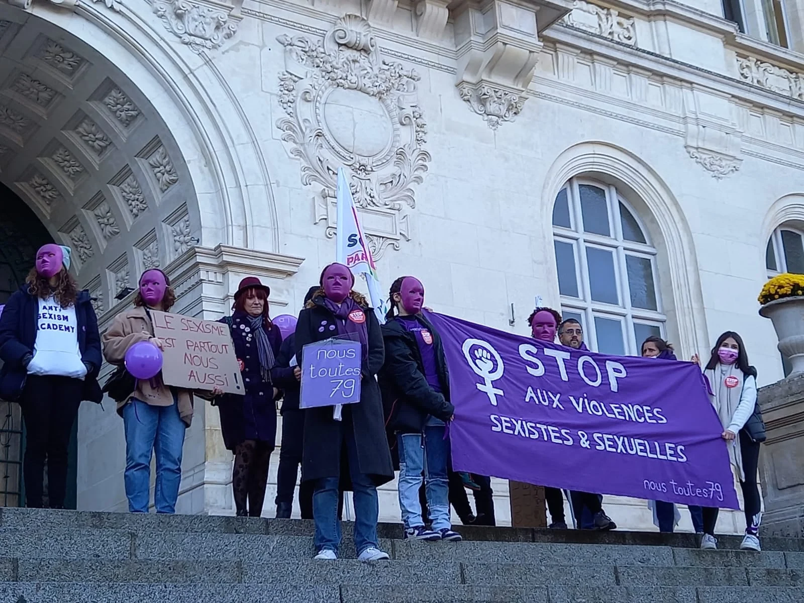
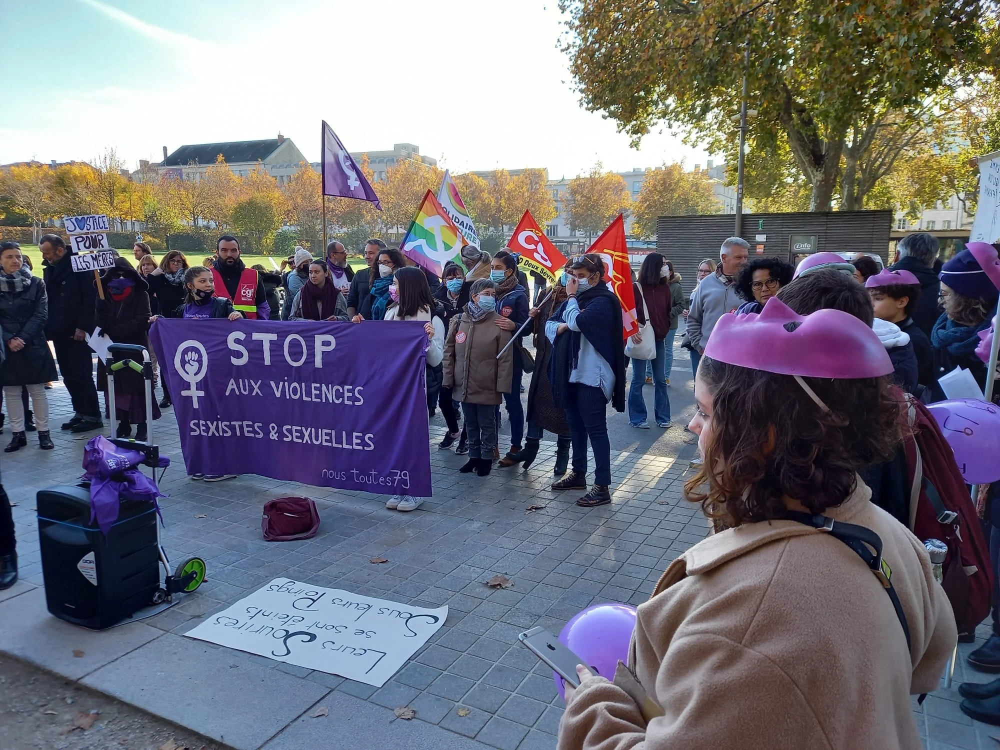
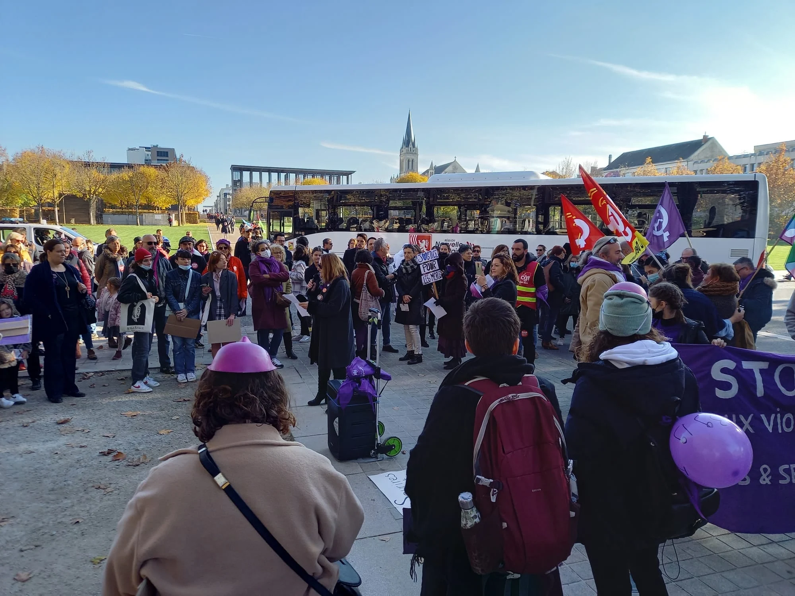
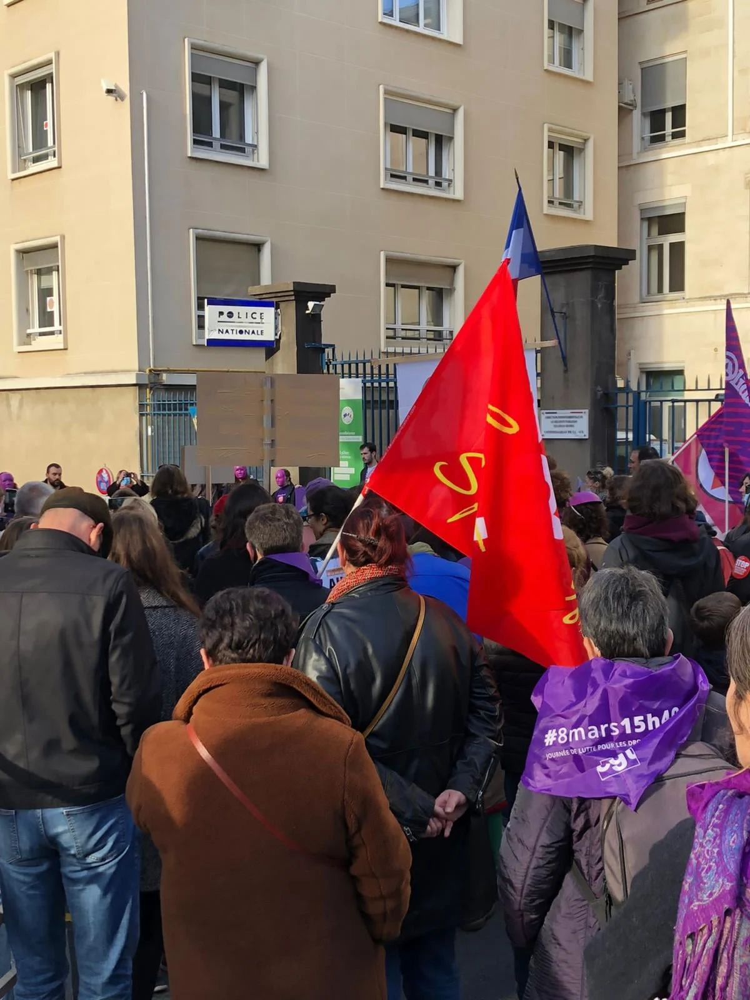

Compte rendu
À Niort, plusieurs centaines de personnes contre les violences sexistes et sexuelles
Date indiquée par Facebook · 21 novembre 2021
Repères éditoriaux
Le 20 novembre 2021, la marche niortaise contre les violences sexistes et sexuelles a rassemblé plusieurs centaines de personnes selon notre compte rendu de l’époque.
Texte conservé avec la publication
Niort - Plusieurs centaines de manifestant.e.s à la marche contre les violences sexistes et sexuelles
Voici le texte de la déclaration faite au nom du PCF79 par notre camarade Valérie à l'issue de cette manifestation.
La fédération des Deux-Sèvres du Parti Communiste Français s’associe au mouvement « Nous Toutes » en ce 20 novembre 2021
L’égalité, par essence, n’accepte aucune domination, aucune soumission, aucune exploitation. L’émancipation des femmes est avant tout une émancipation humaine.
En ce sens, chacune de nos revendications sociales est à même de déstabiliser l’ordre établi pour ouvrir vers la transformation profonde de la société.
Nous voulons conquérir l’égalité professionnelle :
Les inégalités se sont réduites jusqu’en 1990 puis plus rien !
Les femmes travaillent, concentrées dans seulement 12 familles professionnelles sur 87 et qui sont non reconnues, et sous payées, alors que depuis plus de 30 ans elles sont plus diplômées que les hommes.
Elles occupent des postes moins qualifiés, moins valorisés. La société patriarcale maintient les femmes dans un statut d’infériorité.
Le patronat utilise le travail des femmes comme un laboratoire d’expérimentation afin d’étendre la précarité, la flexibilité et le temps partiel à l’ensemble du monde du travail.
Nous voulons établir l’égalité salariale :
La situation se dégrade à toute vitesse pour le salaire des femmes en France à cause des politiques d’austérité et de dérèglement du droit du travail.
En s’intéressant à la différence salariale, on s’aperçoit qu’en 2018 les femmes travaillaient gratuitement à compter du 12 novembre à 15 h 35, soit 10 jours plus tôt qu’en 2016.
Cette année 2021, c’est depuis le 3 novembre à 9 h 22 que les femmes travaillent gratuitement.
Il faut reconnaitre le travail des femmes :
L’invisibilité du travail des femmes est une construction sociale et il faut se battre partout et sans cesse pour démontrer que l’égalité entre les femmes et les hommes n’est pas un supplément d’âme.
Nous voulons une prise en compte du genre dans la prise en charge de la pénibilité dans les emplois « féminisés », aide à la personne, assistantes maternelles, puéricultrices, professeures des écoles, avocates, infirmières…
Nous voulons lutter contre le « plafond de verre » professionnel :
Il cantonne les femmes sur les postes les moins qualifiés, avec les plus bas salaires, avec les possibilités d’évolution les moins importantes…
La revalorisation des métiers dits « féminins » passe aussi par une revalorisation des déroulements des carrières.
55 % des hommes contre seulement 37 % des femmes font des heures supplémentaires.
Outre le problème énorme que cette mesure pose pour les finances de la Sécurité sociale, cela contribue à renforcer les inégalités de revenus, l’inégale répartition des tâches ménagères, la charge mentale.
Nous exigeons la transparence des systèmes de rémunérations.
Nous voulons gagner les 32 heures pour toutes et tous et en finir avec les temps partiels imposés :
82 % des salariés qui ont un contrat à temps partiel sont des femmes. Ces postes sont donc aussi les postes où l’on subit le plus d’abus parce qu’on est plus vulnérable face à la hiérarchie, la clientèle ou à l’environnement professionnel.
Ainsi, 56 % des agressions sexuelles arrivent sur le lieu de travail.
Nous voulons la mixité des métiers partout, on a toutes et tous à y gagner :
L’assignation des femmes, dès le plus jeune âge, à certains métiers plutôt que d’autres : 48 % des femmes occupant un emploi sont cantonnées dans quatre secteurs d’activité : la santé et les services sociaux, l’éducation, l’administration publique et le commerce de détail.
Une telle répartition des métiers est un poids mort pour l’avenir du pays, quand on sait, par exemple, les difficultés auxquelles s’exposent les jeunes femmes pour engager un cursus d’ingénieur alors que la France a besoin de 10 000 ingénieur·e·s supplémentaires par an.
En se donnant l’ambition de sécuriser l’emploi et la formation pour toutes et tous, le PCF intègre la lutte collective contre les inégalités, les stéréotypes sexistes et les discriminations subis par les femmes, notamment la précarité et le temps partiel imposé comme une priorité.
Quelques propositions du PCF :
Pour le partage des pouvoirs
• Créer un ministère de plein droit avec un budget dédié
• Modifier l’article 1er de la Constitution : «la loi garantit (et non plus favorise) l’égal accès des femmes et des hommes aux mandats électoraux et fonctions électives ainsi qu’aux responsabilités professionnelles et sociales ».
• Rendre inéligible un élu convaincu de violences sexistes et/ou sexuelles.
• Lutter contre le harcèlement de rue
Pour la fin des violences faites aux femmes : une loi-cadre
• Faire progresser les droits des victimes et interdire la correctionnalisation des infractions à caractère sexiste et/ou sexuel de nature criminelle
• Mettre en œuvre une politique de prévention et des campagnes publiques d’information et de sensibilisation.
• Garantir la délivrance ou le renouvellement du titre de séjour pour les femmes étrangères victimes de violences.
• Mettre en place des observatoires départementaux de lutte contre les violences faites aux femmes.
Pour l’éducation à l’égalité de la crèche à l’université
• Déconstruire les stéréotypes sur le genre dans tout le cursus scolaire
• Lutter contre les inégalités de genre dans la réussite scolaire
• Accompagner l’orientation des élèves et des étudiant-e-s en finir avec les événements associatifs et/ou culturels sexistes à l'université.







Sources
Archive rouge · export Facebook · AR-0002-FB-02004
À lire aussi · 20 novembre à Niort. Marcher contre les violences sexistes et sexuelles